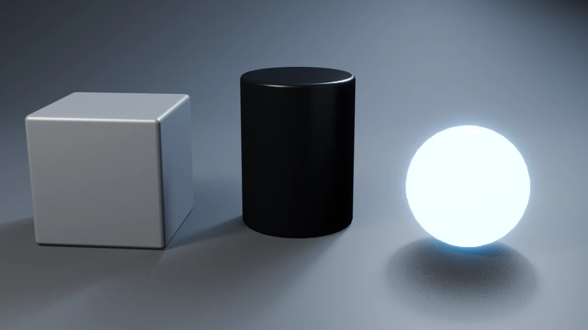

Qué es hard surface // concepto
«Hard surface» es el modelado de objetos duros y fabricados: robots, armas, vehículos o maquinaria. Al contrario que en el modelado orgánico, que ya conoces, aquí mandan las superficies planas, los cortes limpios, los biseles y una lógica mecánica (las piezas tienen que parecer que encajan y funcionan).
Hay dos grandes formas de trabajar, y en la ruta aprenderás las dos:
| Flujo | Cómo funciona | Ideal para |
|---|---|---|
| Bevel + Booleanos («low poly + bevel») | Formas duras, cortes con booleanos y un modificador Bevel que redondea los bordes. Las normales se arreglan con Weighted Normal. | Paneles, armas, placas, piezas mecánicas. Es rápido y no destructivo. Módulos 1–3. |
| Subdivisión | Malla de quads + Subdivision Surface. Los bordes se controlan con support loops (aristas de apoyo). | Cascos, carcasas curvas y superficies suaves tipo Gundam. Módulo 4. |

Por qué importa: en la vida real ningún borde es infinitamente afilado. Un bisel minúsculo atrapa la luz y es lo que hace que una pieza «parezca de metal» y no de cartón. Lo verás una y otra vez.
Instalar Blender // paso 1
- Ve a blender.org/download y descarga la última versión estable. Es gratis y de código abierto. También está en Steam y en la Microsoft Store, gratis igualmente.
- Instálala normalmente (o descomprime la versión portable si prefieres no instalar).
- Ábrela y cierra la ventana de bienvenida.
Sobre las versiones: los renders de esta web se han generado con Blender 4.2 LTS. Todo lo que verás (Extrude, Inset, Bevel, modificadores…) funciona igual en las versiones 4.x y 5.x. Si algún menú cambia de sitio, usa F3, el buscador de operaciones: escribe el nombre de la herramienta y la encontrarás.
Configuración recomendada // paso 2
Abre Edit → Preferences y ajusta esto:
| Dónde | Qué | Por qué |
|---|---|---|
| Input | Emulate 3 Button Mouse, solo si tu ratón no tiene botón central o usas un portátil | Podrás orbitar con Alt+clic izquierdo. |
| Input | Emulate Numpad, solo si tu teclado no tiene teclado numérico | Las vistas (frontal, lateral…) pasan a los números de arriba. Ojo: en modo edición esos números cambian el modo de selección, así que si tienes numpad, déjalo desactivado. |
| Interface | Resolution Scale a 1.1–1.2 si ves la interfaz pequeña | Te cansarás menos la vista. |
| Viewport (en la escena) | Menú Overlays (arriba a la derecha del visor) → Statistics | Verás cuántos vértices y caras tiene tu modelo. Muy útil para controlar la malla. |
Las preferencias se guardan solas (abajo a la izquierda de la ventana puedes comprobar que Auto-Save Preferences está activado).
Addons gratuitos // paso 3
Desde Blender 4.2, los addons oficiales se instalan como extensiones con un clic:
Edit → Preferences → Get Extensions.- Si te lo pide, pulsa Allow Online Access.
- Busca e instala cada uno de estos:
| Extensión | Para qué la usaremos |
|---|---|
| Bool Tool | Booleanos (restar, unir, cortar piezas) con atajos de teclado, como Ctrl+Num − para restar. Imprescindible en el módulo 3. |
| LoopTools | Convertir una selección en un círculo perfecto (Circle), repartir vértices (Space) y unir bucles (Bridge). |
| Extra Mesh Objects | Primitivas extra: engranajes, tornillos, tuberías… perfectas para greebles. |
Opcional: MACHIN3tools (gratis). Su versión gratuita añade menús circulares muy cómodos (modos, sombreado, guardado…). Se descarga desde la web de su autor, machin3.io, y se instala con Preferences → Add-ons → ⌄ → Install from Disk. No es imprescindible: aquí todo se puede hacer sin él.
Forja Tools: el addon gratuito de esta web reúne en un panel las herramientas que aprenderás en la ruta. Úsalo después de hacer cada cosa a mano al menos una vez. Descárgalo aquí.
¿Y HardOps, BoxCutter, DECALmachine…? Son de pago y muy populares, así que los verás en muchos tutoriales. Hacen más rápido lo mismo que aprenderás aquí con las herramientas de serie: Bevel, Boolean y Weighted Normal. Si entiendes la base, puedes seguir cualquier tutorial sin ellos.
Tu estudio de render // proyecto
Las imágenes que te gustan tienen algo en común: un fondo gris curvo (ciclorama) sin horizonte visible y una iluminación de tres puntos. Vamos a montarlo una vez y reutilizarlo en todos los proyectos.
El suelo que se curva
- Borra el cubo por defecto: X → Delete.
- Shift+A → Mesh → Plane. Escálalo: S
10Enter. - Tab para entrar en modo edición y 2 para seleccionar aristas. Haz clic en la arista del fondo (la más alejada de ti en la vista frontal).
- Extrúyela hacia arriba: E Z
8Enter. Ahora tienes una «L». - Selecciona la arista de la esquina de la L y biselala: Ctrl+B, mueve el ratón para agrandar el radio y gira la Rueda hasta tener unos 12 segmentos. Haz clic para confirmar.
- Tab para salir, clic derecho → Shade Smooth.
Iluminación de tres puntos
Añade tres luces de área con Shift+A → Light → Area:
| Luz | Posición | Potencia / tamaño | Función |
|---|---|---|---|
| Principal | Delante a la izquierda, alta | ~400 W · 3 m | Define la forma |
| Relleno | Delante a la derecha, baja | ~80 W · 6 m | Suaviza las sombras |
| Contraluz | Detrás, alta, color azulado | ~650 W · 2 m | Recorta la silueta del fondo: es el «brillo» del borde en tus referencias |
Para que cada luz apunte al centro: selecciona la luz, luego con Shift el objeto (o un Empty en el centro), y pulsa Ctrl+T → Track To Constraint.
Cámara y render
- Encuadra la vista como quieras ver la pieza y pulsa Ctrl+Alt+Num 0: la cámara salta a tu vista.
- En las propiedades de la cámara pon Focal Length 50 mm. Las focales largas deforman menos y dan el aspecto de «foto de producto».
- Render Properties → Render Engine: EEVEE, que es rápido. En Color Management deja AgX.
- World Properties → Color: casi negro. La luz la ponen tus lámparas, no el mundo.
- F12 para renderizar. Con
Image → Save Asguardas la imagen.
Truco: guarda este archivo como estudio_base.blend. En cada proyecto nuevo, ábrelo y haz File → Save As con otro nombre. Así nunca empiezas de cero.
Reto del módulo // checklist
Marca cada punto cuando lo tengas. Tu progreso se guarda en este navegador.